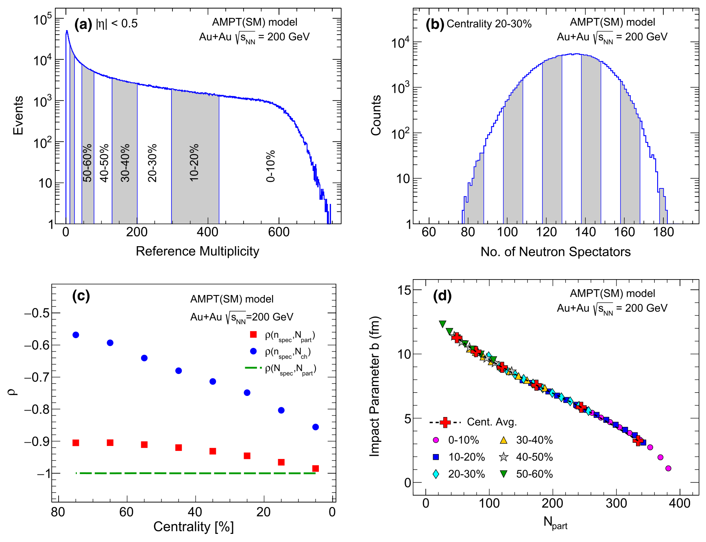
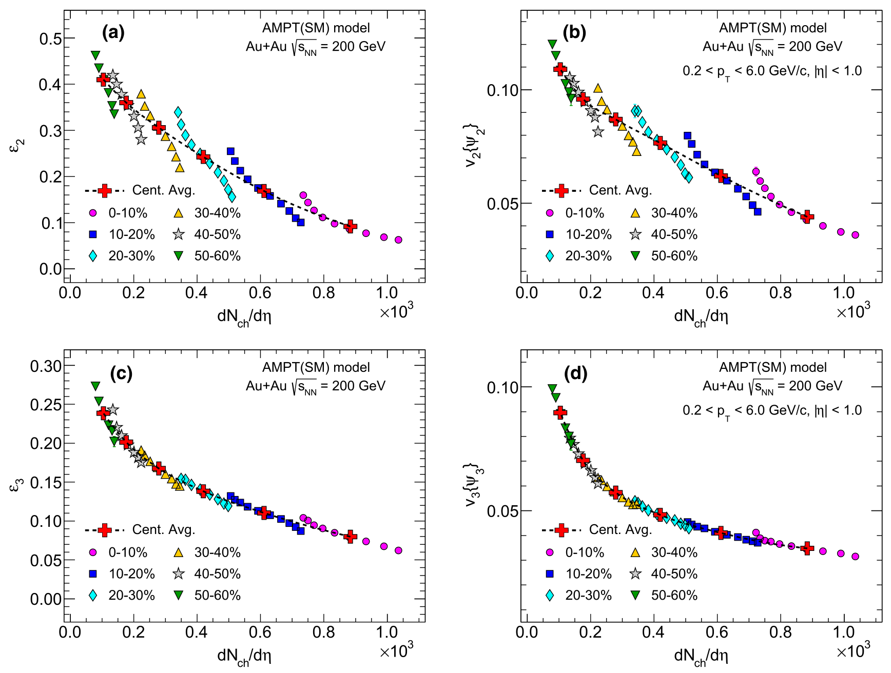
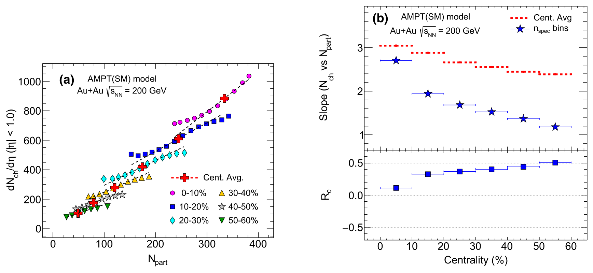
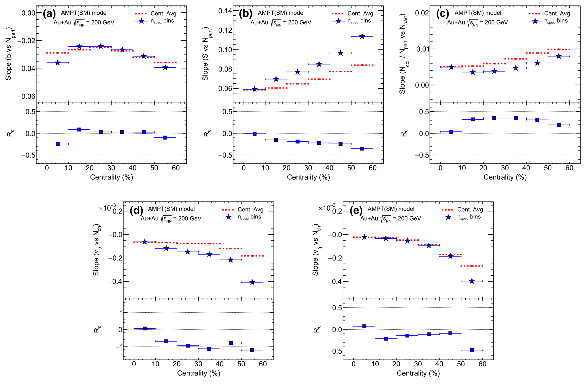

Counting the nucleons that miss: a sharper look at how a collision begins
An improved method to access initial states in relativistic heavy-ion collisions
S. Bhatta and V. Bairathi, Eur. Phys. J. C 82, 855 (2022)
My role: leading author; phenomenology study with AMPT model simulations.
In one paragraph
Heavy-ion collisions are usually grouped by how many particles they produce. Each group still mixes many different starting configurations. We showed, in model simulations, that also counting the spectator neutrons (nucleons that miss the collision) separates events with the same number of participants but different density, and introduced a simple slope ratio, Rc, to quantify what this extra information adds.
1The gap: centrality classes hide the initial state
Experiments sort collisions into centrality classes using the number of charged particles produced (multiplicity, Nch). Every result is then an average over a class. But one class contains many different initial states: different numbers of participating nucleons, overlap areas and shapes. These differences matter, because uncertainty in the initial state limits how well we can extract properties of the quark-gluon plasma.
2What we compute: sort by spectators as well
Nucleons that do not collide, the spectators, fly on along the beam. The neutrons among them can be counted by zero-degree calorimeters (ZDCs) placed far forward on both sides. We call their total nspec, from the left (L) and right (R) sides.
In ~2 million simulated Au+Au events (AMPT transport model), nspec is only weakly correlated with multiplicity, especially in peripheral collisions. So it carries extra information. We split each 10% centrality class into sub-bins of nspec (L+R binning) and compare them with the standard class averages.

3What we observe: same participants, different density
At a fixed number of participants (Npart), L+R bins from a more central class have a smaller overlap area. Those denser events have more nucleon–nucleon collisions per participant and produce more particles. Standard centrality binning alone cannot select such events.

For flow, the two harmonics behave differently. Elliptic flow v2 (and the eccentricity ε2) follows the overlap shape, and the L+R bins deviate strongly from the class average. Triangular flow v3, which comes mostly from random fluctuations, stays close to it.

Putting a number on it: Rc
The new step in this paper is to compare two slopes for each class: the slope of the class averages (Sc) and the slope across the L+R bins inside the class (Sns). Their relative difference, Rc, is zero if an observable is driven only by impact-parameter and nucleon-position fluctuations. A non-zero value measures the extra information the spectators provide.


4What we conclude
- Spectator neutrons are a useful second event classifier on top of multiplicity, because the two are only weakly correlated.
- L+R binning selects events with very different initial densities (by about 40%) and collision rates at the same Npart.
- Rc is large for v2 but small for v3 (about 10% on average). It can therefore help separate the geometric part of v2 from the part due to pure fluctuations.
5What comes next
- Real data: apply the method with ZDC measurements at RHIC and the LHC, for example to control the overlap size in ultra-central collisions.
- Better ZDCs: sharper single-neutron resolution would extend the method beyond the 0–60% centrality range used here.
- Small and deformed nuclei: these systems have extra sources of fluctuations, where L+R binning could be especially telling.
All plots on this page are reproduced from that paper under CC BY 4.0. Animations are simplified illustrations made for this page, not results of the paper.